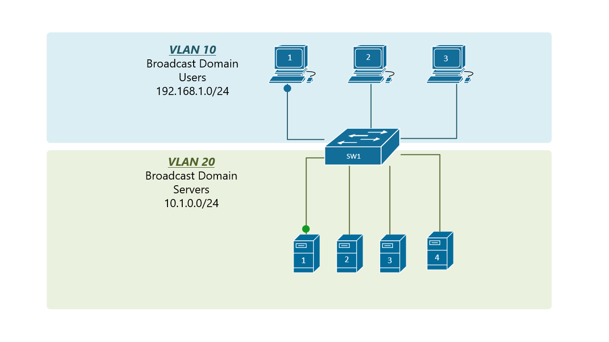

الشبكات المحلية الافتراضية (VLAN)
مقدمة في الشبكات المحلية الافتراضية
الشبكة المحلية الافتراضية (Virtual Local Area Network - VLAN) هي تقنية تسمح بتقسيم شبكة محلية فيزيائية واحدة إلى عدة شبكات منطقية منفصلة. تعمل كل شبكة محلية افتراضية كشبكة مستقلة، على الرغم من أنها تشترك في نفس البنية التحتية الفيزيائية.
تعتبر تقنية VLAN من التقنيات الأساسية في شبكات المؤسسات الحديثة، حيث توفر مرونة في تصميم الشبكة وتحسن الأداء والأمان وتسهل الإدارة.
فوائد الشبكات المحلية الافتراضية
توفر تقنية VLAN العديد من الفوائد للشبكات المحلية:
1. تحسين الأداء
- تقليل نطاق البث (Broadcast Domain): تقسيم الشبكة إلى نطاقات بث أصغر يقلل من حركة البث ويحسن الأداء.
- تقليل الازدحام: فصل حركة البيانات المختلفة يقلل من الازدحام ويحسن استخدام عرض النطاق الترددي.
2. تعزيز الأمان
- عزل حركة البيانات: فصل الأجهزة في شبكات مختلفة يمنع الوصول غير المصرح به.
- تقسيم الشبكة حسب المستخدمين أو التطبيقات: يمكن وضع الأجهزة ذات المتطلبات الأمنية المماثلة في نفس الشبكة المحلية الافتراضية.
3. تسهيل الإدارة
- تنظيم منطقي للشبكة: تجميع الأجهزة المتشابهة في نفس الشبكة المحلية الافتراضية بغض النظر عن موقعها الفيزيائي.
- تبسيط إدارة الشبكة: تسهيل تطبيق السياسات وإدارة الموارد لمجموعات محددة من الأجهزة.
4. تقليل التكاليف
- تقليل الحاجة إلى أجهزة إضافية: يمكن استخدام البنية التحتية الحالية لإنشاء شبكات منطقية متعددة.
- تبسيط توسيع الشبكة: يمكن إضافة أجهزة جديدة إلى الشبكات المحلية الافتراضية المناسبة دون الحاجة إلى تغييرات فيزيائية كبيرة.
كيف تعمل الشبكات المحلية الافتراضية
تعمل الشبكات المحلية الافتراضية من خلال إضافة علامة (Tag) إلى إطارات البيانات (Frames) لتحديد الشبكة المحلية الافتراضية التي تنتمي إليها. يتم تنفيذ هذه العملية وفقًا لمعيار IEEE 802.1Q.
معيار IEEE 802.1Q
معيار IEEE 802.1Q (يسمى أيضًا Dot1q) هو المعيار الأكثر استخدامًا لتنفيذ الشبكات المحلية الافتراضية. يعمل من خلال إدخال حقل إضافي بطول 4 بايت في رأس إطار Ethernet، يحتوي على معرف الشبكة المحلية الافتراضية (VLAN ID).
يتكون حقل 802.1Q من:
- معرف بروتوكول الإطار (TPID): 2 بايت، قيمته 0x8100 للإشارة إلى أن الإطار يحتوي على علامة VLAN.
- معلومات التحكم (TCI): 2 بايت، تتضمن:
- أولوية المستخدم (Priority): 3 بت، تستخدم لتحديد أولوية الإطار (QoS).
- مؤشر التنسيق القانوني (CFI): 1 بت، يشير إلى ما إذا كان الإطار يحتوي على عنوان MAC بتنسيق قانوني.
- معرف VLAN (VID): 12 بت، يحدد الشبكة المحلية الافتراضية التي ينتمي إليها الإطار (0-4095).

عملية التبديل في الشبكات المحلية الافتراضية
عندما يستلم السويتش إطارًا، يتبع الخطوات التالية:
- يتحقق مما إذا كان الإطار يحتوي على علامة VLAN.
- إذا كان الإطار غير معلم، يضيف علامة VLAN بناءً على تكوين المنفذ الذي استلم منه الإطار.
- يتخذ قرار التبديل بناءً على عنوان MAC للوجهة ومعرف VLAN.
- يرسل الإطار إلى المنفذ المناسب، مع إزالة العلامة إذا كان المنفذ مكونًا كمنفذ وصول.
أنواع منافذ VLAN
هناك نوعان رئيسيان من منافذ VLAN:
1. منفذ الوصول (Access Port)
منفذ الوصول هو منفذ ينتمي إلى شبكة محلية افتراضية واحدة فقط. عادة ما يتم توصيل الأجهزة النهائية (مثل أجهزة الكمبيوتر والطابعات) بمنافذ الوصول.
خصائص منفذ الوصول:
- ينتمي إلى شبكة محلية افتراضية واحدة فقط.
- يستقبل إطارات غير معلمة ويضيف علامة VLAN داخليًا.
- يزيل علامة VLAN قبل إرسال الإطارات إلى الجهاز المتصل.
2. منفذ الجذع (Trunk Port)
منفذ الجذع هو منفذ يمكنه نقل حركة البيانات لعدة شبكات محلية افتراضية. عادة ما يتم استخدام منافذ الجذع للاتصال بين السويتشات أو بين السويتش والموجه.
خصائص منفذ الجذع:
- يمكنه نقل حركة البيانات لعدة شبكات محلية افتراضية.
- يحتفظ بعلامات VLAN عند إرسال الإطارات.
- يمكن تكوينه للسماح بشبكات محلية افتراضية محددة فقط.
3. منفذ الوضع الهجين (Hybrid Port)
منفذ الوضع الهجين هو منفذ يجمع بين خصائص منفذ الوصول ومنفذ الجذع. يمكنه نقل حركة البيانات لعدة شبكات محلية افتراضية، مع إمكانية تكوين سلوك العلامات لكل شبكة محلية افتراضية.
خصائص منفذ الوضع الهجين:
- يمكنه نقل حركة البيانات لعدة شبكات محلية افتراضية.
- يمكن تكوينه لإزالة علامات VLAN لبعض الشبكات المحلية الافتراضية والاحتفاظ بها للبعض الآخر.
- يوفر مرونة أكبر في تكوين السلوك لكل شبكة محلية افتراضية.
أنواع الشبكات المحلية الافتراضية
يمكن تصنيف الشبكات المحلية الافتراضية بعدة طرق:
1. حسب الغرض
- VLAN للبيانات (Data VLAN): تستخدم لفصل حركة بيانات المستخدمين.
- VLAN للإدارة (Management VLAN): تستخدم لإدارة أجهزة الشبكة.
- VLAN للصوت (Voice VLAN): تستخدم لحركة الصوت (VoIP).
- VLAN الافتراضية (Default VLAN): الشبكة المحلية الافتراضية التي تنتمي إليها جميع المنافذ عند التكوين الأولي (عادة VLAN 1).
- VLAN الأصلية (Native VLAN): الشبكة المحلية الافتراضية التي لا يتم وضع علامة على إطاراتها في منافذ الجذع.
2. حسب النطاق
- VLAN محلية (Local VLAN): تقتصر على سويتش واحد.
- VLAN موزعة (Distributed VLAN): تمتد عبر عدة سويتشات.
- VLAN على مستوى المؤسسة (Enterprise VLAN): تمتد عبر الشبكة بأكملها.
3. حسب طريقة التعيين
- VLAN المنفذ (Port-Based VLAN): يتم تعيين المنافذ إلى شبكات محلية افتراضية محددة.
- VLAN العنوان MAC (MAC-Based VLAN): يتم تعيين الأجهزة إلى شبكات محلية افتراضية بناءً على عناوين MAC الخاصة بها.
- VLAN البروتوكول (Protocol-Based VLAN): يتم تعيين الإطارات إلى شبكات محلية افتراضية بناءً على نوع البروتوكول.
- VLAN المصادقة (Authentication-Based VLAN): يتم تعيين المستخدمين إلى شبكات محلية افتراضية بناءً على هويتهم.
تكوين الشبكات المحلية الافتراضية
فيما يلي الخطوات الأساسية لتكوين الشبكات المحلية الافتراضية على سويتش سيسكو:
1. إنشاء الشبكات المحلية الافتراضية
Switch(config)# vlan 10 // إنشاء VLAN 10
Switch(config-vlan)# name Marketing // تسمية VLAN 10 باسم "Marketing"
Switch(config-vlan)# exit // الخروج من وضع تكوين VLAN
Switch(config)# vlan 20 // إنشاء VLAN 20
Switch(config-vlan)# name Engineering // تسمية VLAN 20 باسم "Engineering"
Switch(config-vlan)# exit // الخروج من وضع تكوين VLAN
2. تكوين منافذ الوصول
Switch(config)# interface fastethernet 0/1 // الدخول إلى وضع تكوين المنفذ
Switch(config-if)# switchport mode access // تعيين المنفذ كمنفذ وصول
Switch(config-if)# switchport access vlan 10 // تعيين المنفذ إلى VLAN 10
Switch(config-if)# exit // الخروج من وضع تكوين المنفذ
Switch(config)# interface fastethernet 0/2 // الدخول إلى وضع تكوين المنفذ
Switch(config-if)# switchport mode access // تعيين المنفذ كمنفذ وصول
Switch(config-if)# switchport access vlan 20 // تعيين المنفذ إلى VLAN 20
Switch(config-if)# exit // الخروج من وضع تكوين المنفذ
3. تكوين منافذ الجذع
Switch(config)# interface fastethernet 0/24 // الدخول إلى وضع تكوين المنفذ
Switch(config-if)# switchport mode trunk // تعيين المنفذ كمنفذ جذع
Switch(config-if)# switchport trunk allowed vlan 10,20 // السماح بمرور VLAN 10 و 20 فقط
Switch(config-if)# switchport trunk native vlan 99 // تعيين VLAN 99 كـ VLAN أصلية
Switch(config-if)# exit // الخروج من وضع تكوين المنفذ
4. التحقق من تكوين VLAN
Switch# show vlan // عرض معلومات عن جميع الشبكات المحلية الافتراضية
Switch# show vlan brief // عرض ملخص للشبكات المحلية الافتراضية
Switch# show interfaces trunk // عرض معلومات عن منافذ الجذع
Switch# show interfaces fastethernet 0/1 switchport // عرض معلومات VLAN لمنفذ محدد
التوجيه بين الشبكات المحلية الافتراضية
الشبكات المحلية الافتراضية المختلفة لا يمكنها التواصل مع بعضها البعض بشكل مباشر، حيث تعمل كشبكات منفصلة. للسماح بالتواصل بين الشبكات المحلية الافتراضية، يجب استخدام جهاز من الطبقة الثالثة (مثل الموجه) لتوجيه حركة البيانات بينها.
هناك ثلاث طرق رئيسية للتوجيه بين الشبكات المحلية الافتراضية:
1. التوجيه التقليدي (Traditional Inter-VLAN Routing)
في هذه الطريقة، يتم توصيل كل شبكة محلية افتراضية بواجهة فيزيائية منفصلة على الموجه. تعتبر هذه الطريقة بسيطة ولكنها غير فعالة من حيث استخدام الموارد، حيث تتطلب واجهة فيزيائية لكل شبكة محلية افتراضية.
مثال على التكوين:
// تكوين السويتش
Switch(config)# interface fastethernet 0/1
Switch(config-if)# switchport mode access
Switch(config-if)# switchport access vlan 10
Switch(config-if)# exit
Switch(config)# interface fastethernet 0/2
Switch(config-if)# switchport mode access
Switch(config-if)# switchport access vlan 20
Switch(config-if)# exit
// تكوين الموجه
Router(config)# interface fastethernet 0/0
Router(config-if)# ip address 192.168.10.1 255.255.255.0
Router(config-if)# no shutdown
Router(config-if)# exit
Router(config)# interface fastethernet 0/1
Router(config-if)# ip address 192.168.20.1 255.255.255.0
Router(config-if)# no shutdown
2. التوجيه على الوصلة (Router-on-a-Stick)
في هذه الطريقة، يتم استخدام واجهة فيزيائية واحدة على الموجه مع تقسيمها إلى واجهات فرعية (Subinterfaces) لكل شبكة محلية افتراضية. يتم توصيل هذه الواجهة بمنفذ جذع على السويتش.
مثال على التكوين:
// تكوين السويتش
Switch(config)# interface fastethernet 0/1
Switch(config-if)# switchport mode access
Switch(config-if)# switchport access vlan 10
Switch(config-if)# exit
Switch(config)# interface fastethernet 0/2
Switch(config-if)# switchport mode access
Switch(config-if)# switchport access vlan 20
Switch(config-if)# exit
Switch(config)# interface fastethernet 0/24
Switch(config-if)# switchport mode trunk
Switch(config-if)# switchport trunk allowed vlan 10,20
Switch(config-if)# exit
// تكوين الموجه
Router(config)# interface fastethernet 0/0
Router(config-if)# no shutdown
Router(config-if)# exit
Router(config)# interface fastethernet 0/0.10
Router(config-subif)# encapsulation dot1q 10
Router(config-subif)# ip address 192.168.10.1 255.255.255.0
Router(config-subif)# exit
Router(config)# interface fastethernet 0/0.20
Router(config-subif)# encapsulation dot1q 20
Router(config-subif)# ip address 192.168.20.1 255.255.255.0
3. التوجيه بين الشبكات المحلية الافتراضية على مستوى الطبقة الثالثة (Layer 3 Switching)
في هذه الطريقة، يتم استخدام سويتش من الطبقة الثالثة (Layer 3 Switch) الذي يمكنه أداء وظائف التوجيه والتبديل. هذه الطريقة هي الأكثر كفاءة وأداءً، حيث يتم تنفيذ التوجيه بين الشبكات المحلية الافتراضية في الأجهزة.
مثال على التكوين:
// تكوين السويتش من الطبقة الثالثة
Switch(config)# vlan 10
Switch(config-vlan)# name Marketing
Switch(config-vlan)# exit
Switch(config)# vlan 20
Switch(config-vlan)# name Engineering
Switch(config-vlan)# exit
Switch(config)# interface vlan 10
Switch(config-if)# ip address 192.168.10.1 255.255.255.0
Switch(config-if)# no shutdown
Switch(config-if)# exit
Switch(config)# interface vlan 20
Switch(config-if)# ip address 192.168.20.1 255.255.255.0
Switch(config-if)# no shutdown
Switch(config-if)# exit
Switch(config)# ip routing
بروتوكول VLAN Trunking Protocol (VTP)
بروتوكول VTP هو بروتوكول خاص بشركة سيسكو يستخدم لإدارة الشبكات المحلية الافتراضية في شبكة متعددة السويتشات. يسمح VTP بإنشاء وحذف وتعديل الشبكات المحلية الافتراضية على سويتش واحد (VTP Server)، ثم نشر هذه التغييرات تلقائيًا إلى جميع السويتشات الأخرى في نفس مجال VTP.
أوضاع VTP
- وضع الخادم (Server Mode): يمكن إنشاء وحذف وتعديل الشبكات المحلية الافتراضية، ونشر هذه التغييرات إلى السويتشات الأخرى.
- وضع العميل (Client Mode): لا يمكن إنشاء أو حذف أو تعديل الشبكات المحلية الافتراضية، ولكن يمكن استقبال وتطبيق التغييرات من الخادم.
- وضع شفاف (Transparent Mode): لا يشارك في عملية VTP، ولكنه يمرر إعلانات VTP إلى السويتشات الأخرى.
تكوين VTP
// تكوين VTP على سويتش الخادم
Switch(config)# vtp mode server
Switch(config)# vtp domain MyDomain
Switch(config)# vtp password MyPassword
// تكوين VTP على سويتش العميل
Switch(config)# vtp mode client
Switch(config)# vtp domain MyDomain
Switch(config)# vtp password MyPassword
التحقق من تكوين VTP
Switch# show vtp status
Switch# show vtp password
تطبيقات عملية للشبكات المحلية الافتراضية
1. تقسيم الشبكة حسب الأقسام
لنفترض أن لدينا شركة بها أربعة أقسام: الإدارة، التسويق، الهندسة، والموارد البشرية. يمكننا إنشاء شبكة محلية افتراضية لكل قسم:
Switch(config)# vlan 10
Switch(config-vlan)# name Management
Switch(config-vlan)# exit
Switch(config)# vlan 20
Switch(config-vlan)# name Marketing
Switch(config-vlan)# exit
Switch(config)# vlan 30
Switch(config-vlan)# name Engineering
Switch(config-vlan)# exit
Switch(config)# vlan 40
Switch(config-vlan)# name HR
Switch(config-vlan)# exit
// تعيين المنافذ إلى الشبكات المحلية الافتراضية المناسبة
Switch(config)# interface range fastethernet 0/1-5
Switch(config-if-range)# switchport mode access
Switch(config-if-range)# switchport access vlan 10
Switch(config-if-range)# exit
Switch(config)# interface range fastethernet 0/6-10
Switch(config-if-range)# switchport mode access
Switch(config-if-range)# switchport access vlan 20
Switch(config-if-range)# exit
Switch(config)# interface range fastethernet 0/11-15
Switch(config-if-range)# switchport mode access
Switch(config-if-range)# switchport access vlan 30
Switch(config-if-range)# exit
Switch(config)# interface range fastethernet 0/16-20
Switch(config-if-range)# switchport mode access
Switch(config-if-range)# switchport access vlan 40
2. تكوين VLAN للصوت
لنفترض أن لدينا هواتف IP متصلة بنفس المنافذ التي تتصل بها أجهزة الكمبيوتر. يمكننا تكوين VLAN للصوت لفصل حركة الصوت عن حركة البيانات:
Switch(config)# vlan 100
Switch(config-vlan)# name Voice
Switch(config-vlan)# exit
Switch(config)# interface fastethernet 0/1
Switch(config-if)# switchport mode access
Switch(config-if)# switchport access vlan 20
Switch(config-if)# switchport voice vlan 100
3. تكوين التوجيه بين الشبكات المحلية الافتراضية
لنفترض أننا نريد السماح بالتواصل بين VLAN 10 (الإدارة) و VLAN 20 (التسويق)، ولكن نريد عزل VLAN 30 (الهندسة) و VLAN 40 (الموارد البشرية). يمكننا استخدام التوجيه على الوصلة:
// تكوين السويتش
Switch(config)# interface fastethernet 0/24
Switch(config-if)# switchport mode trunk
Switch(config-if)# switchport trunk allowed vlan 10,20,30,40
Switch(config-if)# exit
// تكوين الموجه
Router(config)# interface fastethernet 0/0
Router(config-if)# no shutdown
Router(config-if)# exit
Router(config)# interface fastethernet 0/0.10
Router(config-subif)# encapsulation dot1q 10
Router(config-subif)# ip address 192.168.10.1 255.255.255.0
Router(config-subif)# exit
Router(config)# interface fastethernet 0/0.20
Router(config-subif)# encapsulation dot1q 20
Router(config-subif)# ip address 192.168.20.1 255.255.255.0
Router(config-subif)# exit
Router(config)# interface fastethernet 0/0.30
Router(config-subif)# encapsulation dot1q 30
Router(config-subif)# ip address 192.168.30.1 255.255.255.0
Router(config-subif)# exit
Router(config)# interface fastethernet 0/0.40
Router(config-subif)# encapsulation dot1q 40
Router(config-subif)# ip address 192.168.40.1 255.255.255.0
Router(config-subif)# exit
// تكوين قوائم التحكم بالوصول (ACL) للسماح بالتواصل بين VLAN 10 و VLAN 20 فقط
Router(config)# access-list 101 permit ip 192.168.10.0 0.0.0.255 192.168.20.0 0.0.0.255
Router(config)# access-list 101 permit ip 192.168.20.0 0.0.0.255 192.168.10.0 0.0.0.255
Router(config)# access-list 101 deny ip any any
Router(config)# interface fastethernet 0/0.10
Router(config-subif)# ip access-group 101 in
Router(config-subif)# exit
Router(config)# interface fastethernet 0/0.20
Router(config-subif)# ip access-group 101 in
استكشاف أخطاء الشبكات المحلية الافتراضية وإصلاحها
فيما يلي بعض المشكلات الشائعة في الشبكات المحلية الافتراضية وكيفية استكشافها وإصلاحها:
1. مشكلات الاتصال داخل نفس الشبكة المحلية الافتراضية
- المشكلة: عدم القدرة على الاتصال بين الأجهزة في نفس الشبكة المحلية الافتراضية.
- الأسباب المحتملة: تكوين غير صحيح للمنافذ، عدم تمكين الشبكة المحلية الافتراضية، مشكلات في الكابلات.
- الحل:
- التحقق من تكوين المنافذ باستخدام الأمر
show interfaces switchport. - التحقق من حالة الشبكة المحلية الافتراضية باستخدام الأمر
show vlan. - التحقق من حالة المنافذ باستخدام الأمر
show interfaces status.
- التحقق من تكوين المنافذ باستخدام الأمر
2. مشكلات الاتصال بين الشبكات المحلية الافتراضية
- المشكلة: عدم القدرة على الاتصال بين الأجهزة في شبكات محلية افتراضية مختلفة.
- الأسباب المحتملة: عدم تكوين التوجيه بين الشبكات المحلية الافتراضية، مشكلات في تكوين الموجه، قوائم التحكم بالوصول.
- الحل:
- التحقق من تكوين التوجيه بين الشبكات المحلية الافتراضية.
- التحقق من جداول التوجيه باستخدام الأمر
show ip route. - التحقق من قوائم التحكم بالوصول باستخدام الأمر
show access-lists. - استخدام الأمر
pingلاختبار الاتصال بين الشبكات المحلية الافتراضية.
3. مشكلات منافذ الجذع
- المشكلة: عدم نقل حركة البيانات عبر منافذ الجذع.
- الأسباب المحتملة: عدم تطابق وضع المنفذ، عدم تطابق الشبكات المحلية الافتراضية المسموح بها، عدم تطابق الشبكة المحلية الافتراضية الأصلية.
- الحل:
- التحقق من تكوين منافذ الجذع باستخدام الأمر
show interfaces trunk. - التأكد من أن وضع المنفذ هو "trunk" على كلا طرفي الاتصال.
- التأكد من أن الشبكات المحلية الافتراضية المسموح بها متطابقة على كلا طرفي الاتصال.
- التأكد من أن الشبكة المحلية الافتراضية الأصلية متطابقة على كلا طرفي الاتصال.
- التحقق من تكوين منافذ الجذع باستخدام الأمر
4. مشكلات VTP
- المشكلة: عدم نشر الشبكات المحلية الافتراضية عبر السويتشات.
- الأسباب المحتملة: عدم تطابق مجال VTP، عدم تطابق كلمة مرور VTP، عدم تطابق رقم المراجعة.
- الحل:
- التحقق من تكوين VTP باستخدام الأمر
show vtp status. - التأكد من أن مجال VTP متطابق على جميع السويتشات.
- التأكد من أن كلمة مرور VTP متطابقة على جميع السويتشات.
- إذا كان رقم المراجعة على سويتش العميل أعلى من رقم المراجعة على سويتش الخادم، قم بإعادة تعيين رقم المراجعة على سويتش العميل.
- التحقق من تكوين VTP باستخدام الأمر
أفضل الممارسات للشبكات المحلية الافتراضية
فيما يلي بعض أفضل الممارسات التي يجب اتباعها عند تصميم وتنفيذ وإدارة الشبكات المحلية الافتراضية:
1. تصميم الشبكات المحلية الافتراضية
- تقسيم الشبكة إلى شبكات محلية افتراضية منطقية بناءً على الوظيفة أو القسم أو الموقع.
- الحد من حجم نطاق البث لتحسين الأداء.
- استخدام أرقام VLAN ذات معنى لتسهيل الإدارة.
- توثيق تصميم الشبكات المحلية الافتراضية وتخصيص عناوين IP.
2. الأمان
- تغيير الشبكة المحلية الافتراضية الافتراضية (VLAN 1) لوظائف الإدارة فقط.
- تعطيل VLAN 1 على منافذ الجذع غير المستخدمة.
- استخدام VLAN منفصلة للإدارة.
- تقييد الشبكات المحلية الافتراضية المسموح بها على منافذ الجذع.
- استخدام VLAN الأصلية غير المستخدمة على منافذ الجذع.
3. التوجيه بين الشبكات المحلية الافتراضية
- استخدام التوجيه على مستوى الطبقة الثالثة عندما يكون ذلك ممكنًا للحصول على أداء أفضل.
- استخدام قوائم التحكم بالوصول لتقييد التواصل بين الشبكات المحلية الافتراضية.
- تنفيذ سياسات أمان متسقة عبر جميع الشبكات المحلية الافتراضية.
4. إدارة VTP
- استخدام وضع VTP الشفاف في البيئات الصغيرة أو عندما تكون الإدارة المركزية غير ضرورية.
- استخدام كلمة مرور قوية لمجال VTP.
- التحقق من رقم مراجعة VTP قبل إضافة سويتش جديد إلى الشبكة.
- توثيق تكوين VTP وتغييراته.
خلاصة
الشبكات المحلية الافتراضية هي تقنية أساسية في شبكات المؤسسات الحديثة، توفر مرونة في تصميم الشبكة وتحسن الأداء والأمان وتسهل الإدارة. فهم مبادئ الشبكات المحلية الافتراضية وكيفية تنفيذها وإدارتها يساعدك على تصميم وتنفيذ شبكات فعالة وآمنة.
في هذا الدرس، تعلمنا:
- مفهوم الشبكات المحلية الافتراضية وفوائدها.
- كيفية عمل الشبكات المحلية الافتراضية ومعيار IEEE 802.1Q.
- أنواع منافذ VLAN (الوصول، الجذع، الهجين).
- أنواع الشبكات المحلية الافتراضية وتصنيفاتها.
- تكوين الشبكات المحلية الافتراضية على سويتشات سيسكو.
- التوجيه بين الشبكات المحلية الافتراضية.
- بروتوكول VTP وكيفية استخدامه.
- تطبيقات عملية للشبكات المحلية الافتراضية.
- استكشاف أخطاء الشبكات المحلية الافتراضية وإصلاحها.
- أفضل الممارسات للشبكات المحلية الافتراضية.
في الدرس القادم، سنتعمق في مفهوم الشبكات اللاسلكية وكيفية تنفيذها وإدارتها وتأمينها.